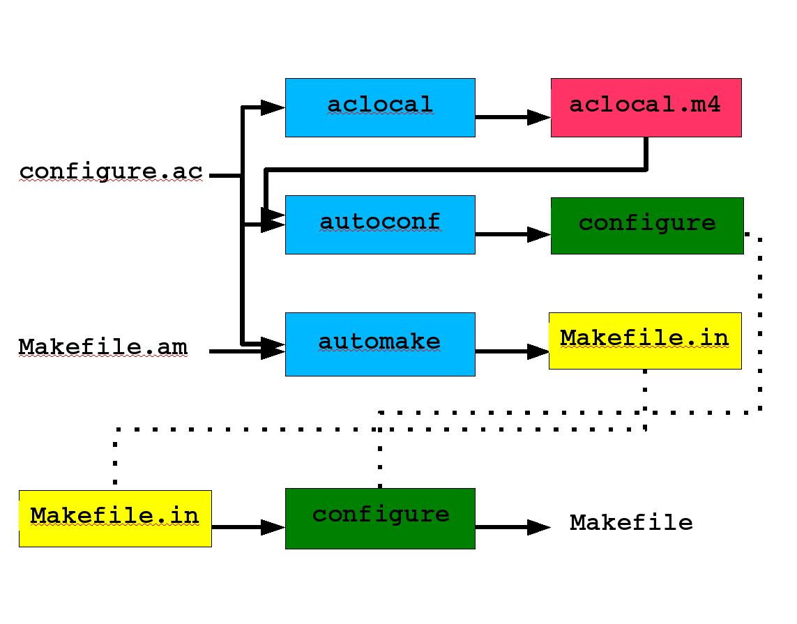

| Abstract |
The information in this document is targeted primarily toward the RFPK Software Team and associates and is specific to the computer systems and network installed in the RFPK Laboratory of the Department of Bioengineering of the University of Washington. RFPK is the Resource for Population Kinetics. Its work is supported, in part, by grant P41 EB-001975 of the National Institutes of Health (NIH) of the U.S. Department of Health and Human Services. Copyright (c) 2004, by the University of Washington. |
| Revision History | ||
|---|---|---|
| Revision 1.4 | February 8, 2005 | Revised by: sh |
| Fixed a broken image link. Fulfilled "distribution" section. | ||
| Revision 1.3 | February 8, 2005 | Revised by: sh |
| Changed the title | ||
| Revision 1.2 | February 8, 2005 | Revised by: sh |
| Changed the title | ||
| Revision 1.1 | February 1, 2005 | Revised by: sh |
| Initial version | ||
The primary goal of this documentation is to summarize dependencies among the tools that collectively discover peculiarity of a machine on which the tools are run and create Makefile(s) that build projects for that machine. Such tools include Autoconf, Automake and Libtool, which further make use of Autoheader, libtoolize, aclocal and so on. Secondarily, this documentation lists key features of these auto-tools that would be relevant to projects of sizes RFPK most likely to face.
Most of the contents of this documentation comes from GNU Autoconf, Automake, and Libtool by Gary Vaughn, Ben Ellison, Tom Traney and Ian Taylor, which is published under Open Publication License.
Autotools is a collection of tools, which is used to discover peculiarity of a machine on which it runs and creates customized Makefile(s) for that machine. Autotools includes Autoconf, Automake and Libtool, which further make use of Autoheader, libtoolize, aclocal and so on. The collection evolved over years. The first to come was Autoconf, which was soon followed by Automake. Then, when shared libraries became the norm (as opposed to static libraries), Libtool was developed.
Perhaps because of the way Autotools has been evolved, there are lots of couplings among Tools, which frustrate new users heck out it. Take a back, the Tools themselves do not interact with each other directly. The way in which their inputs and outputs are used, however, is inter-mingled, for the lack of better word. A single file serves as an input to both aclocal and Autoconf. Yet, an output of aclocal serves as another input to Autoconf. An output of Autoconf becomes a tool to translate an output of Automake, and so on.
The minimal set of files you the developer must provide for the Autotools's cascading effect to take place are the following two:
This is the primary (note, I said primary) input file for Autoconf. You need (and probably want) only one configure.ac per product.
In this file, you list macros that are associated with features and tools you are going to use to build your project. For example, if your project is written in C++ and thus you need a C++ compiler to build it, you list a macro AC_PROG_CXX.
This is a pseudo Makefile and is going to be the primary input file for Automake. You need at least one Makefile.am per product but, if the product is organized in multiple directories, you need one per sub-project/directory. For instance, if your product ships with a library and a set of documentations (say, their source are found in lib/ and doc/ directories), you need a Makefile.am in the top directory, one in lib/ and another in doc/ so that these Makefile.am's are processed recursively.
In this file, you define a number of variables that are already declared by Automake. Such variables may include AC_CXXFLAGS. The value set for AC_CXXFLAGS is translated as compiler flags.
The following diagram demonstrates dependencies among the Tools and their artifacts. The blue boxes capture the Tools. Artifacts that are going to serve as inputs to some other tools or become tools themselves are color-boxed as well. Note that, I did not include the role of Autoheader or Libtool in this diagram in order to keep the complexity kept minimal.

Simplified Dependencies
The autoconf program takes two input files: configure.ac and aclocal.m4. aclocal.m4is generated by aclocal and contains the definitions of macros used in configure.ac. Autoconf expands these macros in configure.ac, perhaps using macro definitions from aclocal.m4, to generate the configure. [ Click here for a diagram]
The aclocal program creates the file aclocal.m4 by combining stock installed macros, user defined macros and the contents of acinclude.m4 to define all of the macros required by configure.in in a single file. [ Click here for a diagram]
The automake program takes two input files: configure.in and Makefile.am (one that resides in the same directory as of configure.in). It generates Makefile.in, which, in turn, becomes an input to the configure script generated by Autoconf. [ Click here for a diagram]
Libtool is a collection of scripts that handle the differences between shared library generation and use on different systems. This Tool is automatically used when you list a macro AC_PROG_LIBTOOL in configure.ac and shared libraries under xxx_LTLIBRARIES in one of your Makefile.am's. A program called libtoolize adds the necessary infrastructure to your project [ Click here for a diagram].
A bootstrap can be a script which runs Tools in a proper order with options that enable them to generate missing files along the way when you apply Autotools to your project for the first time. You probably have seen autogen.sh. That script does just that. The name us, however, somewhat misleading. It sounds as if it is only useful for the very first time you apply Autotools. The script rather should be called something like bootstrap. It can be run over and over again whenever you made changes to your configure.ac or Makefile.am's.
configure.ac is where you list macros -- to check some features and aspects of the system, to look for a C compiler, etc. --- to be executed in sequence. You list both Autoconf and Automake macros in this file because this file serves as the input file for both tools. AC_'s are Autoconf macros. AM_'s are Automake's. The entire list of Autoconf macros are available here. Here, I list only essentials.
This macro performs essential initialization for the generated configure script. Naturally, this macro appears at the top of configure.ac.
This macro must be called at the end of every configure.ac. It creates each file listed in this macro. For a given file, by default, configure reads the template file whose name is the name of the input file with .in appended.
When this macro presents, all the C preprocessor macros are defined in the named file (ie. by convention, you usually name it config.h) as opposed to having them defined via -D options in DEFS Makefile. If you're using Automake, however, use AM_CONFIG_HEADER instead.
AC_PROG_xxx macros look for certain programs/tools and set appropriate C preprocessor macros accordingly.
This checks for C compiler to use and set the shell variable CC to the value. If the GNU C compiler is being used, this sets the shell variable GCC to yes. This macro sets the shell variable CFLAGS if it has not already been set. It also calls AC_SUBST on CC and CFLAGS.
This is like AC_PROG_C but checks for C++ compiler and sets the shell variable CXX and CXXFLAGS.
This macro sets the output variable CPP to a command that runs the C preprocessor.
This looks for a lex-like program and sets the Makefile variable LEX to the result. If you are using Automake, use AM_PROG_LEX to have it do additional initialization work.
This looks for a yacc-like program and sets the Makefile variable YACC to the result.If you are using Automake, use AM_PROG_YACC to have it do additional initialization work.
This macro is the primary way to integrate Libtool support into configure. If you are building shared libraries (ie. as opposed to static), you must call this macro.
AC_CHECK_xxx macros check certain aspects of the system onto which your program is built and/or installed. When a test passes, Automake defines a macro beginning with HAVE_ followed by the aspect/function/file/etc. name listed in AC_CHECK_. These macros will be defined via -D options unless AC_CONFIG_HEADER is specified in configure.ac.
Here are a few of them.
To see if a particular function is implemented on the target system, list function names in AC_CHECK_FUNCS. For instance, you want to check if time is implemented. Add the following macro in configure.ac, and a macro HAVE_TIME will be defined when the function is found:
AC_CHECK_FUNCS( stat, break )
|
A shell command, break, can appear anywhere after a function name. It tells Autoconf to stop looking for the remaining functions in the list. For further discussion, consult particular function checks or generic (other) function checks.
This looks for the named function in the named libray specified by its base name. For instance, the math library, libm.a, would be named just m. If the function is found in the library foo, the C processor macro HAVE_LIBFOO is defined.
Makefile.am is the primary input file to Automake. Automake turns this into a GNU compliant Makefile.in for use with configure. Consider Makefile.am as macro Makefile. Thus, you write Makefile.am according to make syntax. Automake recognizes special macro and target names and genrates code based on these.
Ordinary make comments ('#') are passed through to the output, but comments beginning with '##' are Autokame comments and are not passed through.
All macros and targests, including those that Automake does not recognize, are passed through to the generated Makefile.in.
Automake turns every AC_SUBST into a Makefile variable. This is convenient in more ways than on: Not only does it mean that you can refer to these macros in Makfele.am without extra work, but, bcause Automake scans configure.in before it reads any Makefile.am, it also means that special variables and overrides Automake recognizes can be defined once in configure.in.
Suppose you want to build a library from source code organized in such a way::
aspk/spkcompiler/...(common source)...
aspk/spkcompiler/nonmem/something1.cpp
something2.cpp
...(NONMEM specific source)...
|
lib_LIBRARIES = libspkcompiler.a
libspkcompiler_a_SOURCES = nonmem/something1.cpp ...
|
To have Automake execute recursively into subdirectories, specify in the top Makefile.am:
SUBDIR = . sub1 sub2
|
Prefixes are used to decide where the built objects should be installed. These names are prefixes to the primary which indicate which standard directory should be used as the installation directory. The standard directory names are given in the GNU standards (see Variables for Installation Directories). Automake extends this list with pkglibdir, pkgincludedir, and pkgdatadir; these are the same as the non-pkg versions, but with @PACKAGE@ appended. For instance, pkglibdir is defined as $(libdir)/@PACKAGE@.
For each primary, there is one additional variable named by prepending EXTRA_ to the primary name. This variable is used to list objects which may or may not be built, depending on what configure decides. This variable is required because Automake must statically know the entire list of objects that may be built in order to generate a Makefile.in that will work in all cases.
Automake adds to the standard directories for installation.
By default, an installable file specified in a subdirectory will have its directory name stripped before installation. For instance, in this example, the header file will be installed as $(includedir)/stdio.h:
include_HEADERS = inc/stdio.h
|
nobase_include_HEADERS = sys/types.h
|
nobase_dist_pkgdata_DATA = images/vortex.pgm
|
You tell Automake what and how to build by setting variables ending with appropriate Primaries. Many actual variable names put into `Makefile.am' are constructed by adding various prefixes to a primary (Refer to GNU Autoconf, Automake and Libtool for details about Primaries).
Taste of Primaries
Macros of this type list header files. These are separate from DATA macros because this allows for extra error checking in some cases.
Macros of this type list (SE. static) libraries to be built.
Macros of this type list Libtool (ie. shared) libraries to be built.
Macros of this type list programs to be built. The program(s) are built and arranged to be installed into bindir. For example, if you want to build a program called doit, you set:
bin_PROGRAMS = doit |
Macros of this type list the names of the source code files to be used to build the target (ex. a library). I said "names"; You may not specify paths!!! Automake needs to know the static list of files that can be compiled into your program/library as well. If some source is conditinally compiled, it can be listed in EXTRA variable (consult 7.4: Programs and Libraries, "GNU Autoconf, Automake and Libtool")
This macro is used to do all the standard initializtaion required by Automake. Use this if you're going to use Automake.
When this macro presents, all the C preprocessor macros are defined in the named file (ie. by convension, you usually name it config.h) as opposed to having them defined via -D options in DEFS Makefile. This is very much like AC_CONFIG_HEADER (i.e. an Autoconf macro) but does additional initialization work for Automake
This is the variable which the Makefile.am author can use to pass in additional C compiler flags. In some situations, this is not used, in preference to the per-executable (or per-library) _CFLAGS.
This is similar to AM_CFLAGS but for C++.
The contents of this variable are passed to every compilation which invokes the C preprocessor; it is a list of arguments to the preprocessor. For instance, -I and -D options should be listed here.
Automake already provides some -I options automatically. In particular it generates -I$(srcdir), -I., and a -I pointing to the directory holding config.h (if you've used AC_CONFIG_HEADERS or AM_CONFIG_HEADER). You can disable the default -I options using the nostdinc option.
AM_CPPFLAGS is ignored in preference to a per-executable (or per-library) _CPPFLAGS variable if it is defined.
This is the variable which the Makefile.am author can use to pass in additional linker flags. In some situations, this is not used, in preference to the per-executable (or per-library) _LDFLAGS.
You use Libtool when you intend to build a shared library. All you have to do is to state AC_PROG_LIBTOOL in configure.ac for integration of the Tool and list the library name under _LDLIBRARIES in a Makefile.am. Then, Autoconf and Automake create necessary scripts used by Libtool so taht these scripts may be installed/copied on to the user's machine and not requiring them a (specific-version of) Libtool installation.
Libtool libraries should begin with lib so taht the linker can find them when passed with the -l option.
So, building a Libtool libraray on your machine is as simple as that but distributing the source and allow users to build on their own require a bit more. See make dist: Making a Distribution Tarball for further info.
Files defined for Make variables (remember Automake variables *are* Make variables) with certain Primaries are installed into the directories where their prefixes indicate. For instance, a program listed for bin_PROGRAMS will be installed into bindir (ie. GNU standard directory for program installation: ex. /usr/bin/). A library listed under lib_LIBRARIES will go into libdir (ex. /usr/lib/).
Here are a summary of Primaries and their directory variables that can be associated with:
| Primary | Directory Variables |
|---|---|
| PROGRAMS | bindir, sbindir, libexecdir, pkglibdir |
| LIBRARIES | libdir, pkglibdir |
| LTLIBRARIES | libdir, pkglibdir |
| SCRIPTS | bindir, sbindir, binexecdir, pkgdatadir |
| DATA | datadir, sysconfdir, sharedsatedir, localstatedir, pkgdatadir |
| HEADERS | includedir, oldincludedir, pkgincludedir |
| TEXINFO | infodir |
| MANS | man, man0-9, mann |
You can define arbitrary directory variables as such:
foodir = xxx
foo_PROGRAMS
|
The top level Makefile generated by configure has a target named dist. This bundles all necessary files and creates a tar file. The generated tar file name has a general format: package-version.tar.gz and unpacks into a directory named package-version.
All the files Automake automatically distributes are shown by:
automake --help
|
Files which are automatically distributed, if found:
ABOUT-GNU README config.rpath ltcf-gcj.sh
ABOUT-NLS THANKS config.sub ltconfig
AUTHORS TODO configure ltmain.sh
BACKLOG acconfig.h configure.ac mdate-sh
COPYING aclocal.m4 configure.in missing
COPYING.DOC ansi2knr.1 depcomp mkinstalldirs
COPYING.LESSER ansi2knr.c elisp-comp py-compile
COPYING.LIB compile install-sh stamp-vti
ChangeLog config.guess libversion.in texinfo.tex
INSTALL config.h.bot ltcf-c.sh ylwrap
NEWS config.h.top ltcf-cxx.sh
|
dist_data_DATA = a.txt b.txt
bin_PROGRAMS = foo
foo_SOURCES = x.h x.cpp y.h y.cpp z.h z.cpp
nodist_foo_SOURCES = z.h z.cpp
|
make distcheck performas a make dist as usual, then proceeds to untar the new archive into a fresh directory, build it in a fresh build directory seperate from the source directory, install it into a third fresh directory and finally run make check in the build tree.
But, you're right. It only checks on the same architecture, or even worse on a single machine which may be completely loaded with necessary third vendor libraries/tools.
Let's say you have a suite of tests that excersize your library components. You want to execute the tests and, if all tests pass, then install the library. In other words, you don't want to install the library unless all tests pass. Suppose you have a header file organized in a package directory like this:
/usr/local/include/mypackage/a.h
|
(somewhere)/mypackage/a.h
(somewhere)/mypackage/b.h
|
Copyright (c) 2004, by the University of Washington. This material may be distributed only subject to the terms and conditions set forth in the Open Publication License, V1.0 or later (the latest version is presently available here.